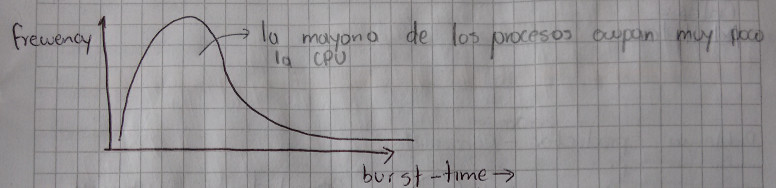
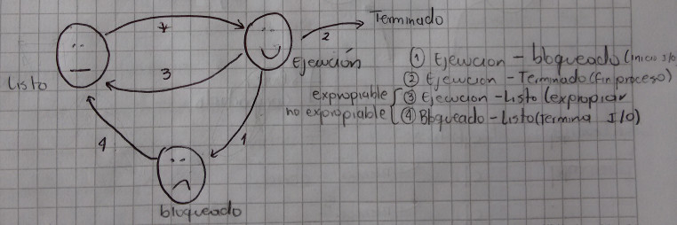
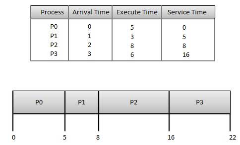
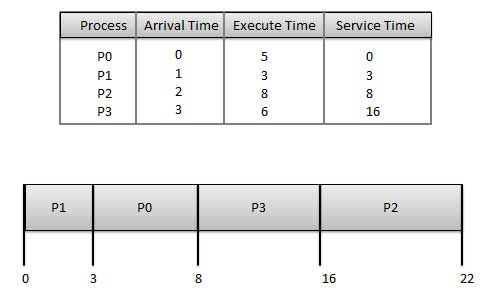
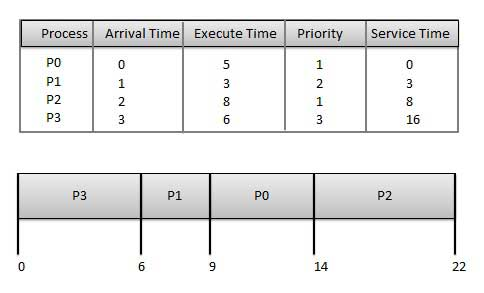
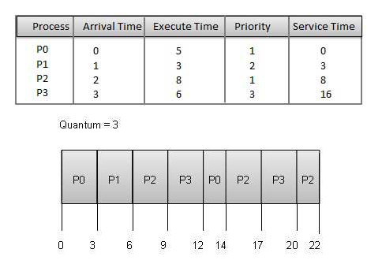

Cuando hay más de un proceso que esa en condiciones de ejecutar en la CPU, se debe escoger alguno. El encargado de tomar esta decisión es el despachador (Planificador / Scheduler) y el algoritmo que usa se llama "El algoritmo de despacho (planificación)".
Una complicación adicional que hay que tener en cuenta es que cada proceso es único e impredecible. Algunos son intensivos en I/O otros son intensivos en CPU. En cualquier caso todos los proceso alternan entre una fase de ejecución de CPU y la otra de espera por I/O. Aunque la duración de las fases de CPU, es impredecible y varia mucho entre un proceso y otro, ¿que dice el siguiente gráfico estadístico?; el cual puede ser muy importante a la hora de tomar una decisión.


En los casos 1 y 2 necesariamente hay que escoger un nuevo proceso (CPU desocupada), pero en los casos 3 y 4 podría no tomarse ninguna decisión de Scheduling. ¿Por que?
¿Problemas de planificación expropiadora? Suponga dos procesos que comparten un recurso. En el momento en el que uno de los procesos esta modificando el recurso compartido le quitamos CPU y no alcanza a modificar. El otro proceso encontraría una variable mal actualizada.
Ejemplo:

El tiempo de espera de cada proceso es el siguiente:
| Proceso | TiempoServicio - TiempoLlegada = TiempoEspera |
|---|---|
| P0 | 0 - 0 = 0 |
| P1 | 5 - 1 = 4 |
| P2 | 8 - 2 = 6 |
| P3 | 16 - 3 = 13 |
Tiempo promedio de espera: (0+4+6+13) / 4 = 5.55
Ejemplo:

El tiempo de espera de cada proceso es el siguiente:
| Proceso | TiempoServicio - TiempoLlegada = TiempoEspera |
|---|---|
| P0 | 3 - 0 = 3 |
| P1 | 0 - 0 = 0 |
| P2 | 16 - 2 = 14 |
| P3 | 8 - 3 = 5 |
Tiempo promedio de espera: (3+0+14+5) / 4 = 5.50
Ejemplo:

El tiempo de espera de cada proceso es el siguiente:
| Proceso | TiempoServicio - TiempoLlegada = TiempoEspera |
|---|---|
| P0 | 9 - 0 = 9 |
| P1 | 6 - 1 = 5 |
| P2 | 14 - 2 = 12 |
| P3 | 0 - 0 = 0 |
Tiempo promedio de espera: (9+5+12+0) / 4 = 6.5
Ejemplo:

El tiempo de espera de cada proceso es el siguiente:
| Proceso | TiempoServicio - TiempoLlegada = TiempoEspera |
|---|---|
| P0 | (0 - 0) + (12 - 3) = 9 |
| P1 | (3 - 1) = 2 |
| P2 | (6 - 2) + (14 - 9) + (20 - 17) = 12 |
| P3 | (9 - 3) + (17 - 12) = 11 |
Tiempo promedio de espera: (9+2+12+11) / 4 = 8.5